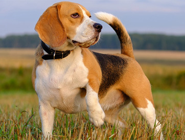
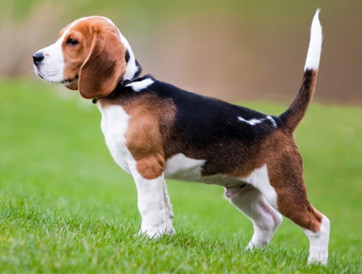
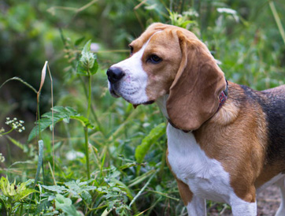
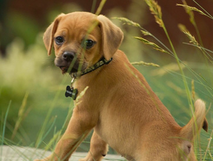
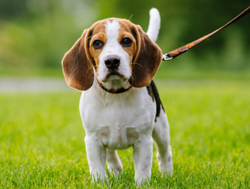

The Beagle
The Beagle is a breed of small hound that is similar in appearance to the much larger foxhound. The beagle is a scent hound, developed primarily for hunting hare. With a great sense of smell and superior tracking instinct, the beagle is employed as detection dog for prohibited agricultural imports and foodstuffs in quarantine around the world. The beagle is intelligent but single-minded. It is a popular pet due to its size, good temper, and lack of inherited health problems.
History
From medieval times, beagle was used as a generic description for the smaller hounds, though these dogs differed considerably from the modern breed. Miniature breeds of beagle-type dogs were known from the times of Edward II and Henry VII, who both had packs of Glove Beagles, so named since they were small enough to fit on a glove, and Queen Elizabeth I kept a breed known as a Pocket Beagle, which stood 8 to 9 inches (20 to 23 cm) at the shoulder. Small enough to fit in a "pocket" or saddlebag, they rode along on the hunt. The larger hounds would run the prey to ground, then the hunters would release the small dogs to continue the chase through underbrush. Elizabeth I referred to the dogs as her singing beagles and often entertained guests at her royal table by letting her Pocket Beagles cavort amid their plates and cups. 19th-century sources refer to these breeds interchangeably and it is possible that the two names refer to the same small variety.
Reverend Phillip Honeywood established a beagle pack in Essex in the 1830s and it is believed that this pack formed the basis for the modern breed. Honeywood's Beagles were small, standing at about 10 inches (25 cm) at the shoulder, and pure white according to John Mills (writing in The Sportsman’s Library in 1845).
Although credited with the development of the modern breed, Honeywood concentrated on producing dogs for hunting and it was left to Thomas Johnson to refine the breeding to produce dogs that were both attractive and capable hunters. Two strains were developed: the rough- and smooth-coated varieties.
Appearence
They have a smooth, somewhat domed skull with a medium-length, square-cut muzzle and a black (or occasionally liver) gumdrop nose. The jaw is strong and the teeth scissor together with the upper teeth fitting perfectly over the lower teeth and both sets aligned square to the jaw. The eyes are large, hazel or brown, with a mild hound-like pleading look. The large ears are long, soft and low-set, turning towards the cheeks slightly and rounded at the tips. Beagles have a strong, medium-length neck (which is long enough for them to easily bend to the ground to pick up a scent), with little folding in the skin but some evidence of a dewlap; a broad chest narrowing to a tapered abdomen and waist and a long, slightly curved tail (known as the "stern") tipped with white. The tail does not curl over the back, but is held upright when the dog is active. The beagle has a muscular body and a medium-length, smooth, hard coat.
The tricolored beagle — white with large black areas and light brown shading — is the most common. Some tricolored dogs have a broken pattern, sometimes referred to as pied. These dogs have mostly white coats with patches of black and brown hair. Tricolor beagles are almost always born black and white. The white areas are typically set by eight weeks, but the black areas may fade to brown as the puppy matures. (The brown may take between one and two years to fully develop.) Some beagles gradually change color during their lives, and may lose their black markings entirely.
Two-color varieties always have a white base color with areas of the second color. Tan and white is the most common two-color variety, but there is a wide range of other colors including lemon, a very light tan; red, a reddish, almost orange, brown; and liver, a darker brown, and black.
Sense of Smell
Alongside the Bloodhound and Basset Hound, the beagle has one of the best developed senses of smell of any dog. In the 1950s, John Paul Scott and John Fuller began a 13-year study of canine behavior. As part of this research, they tested the scenting abilities of various breeds by putting a mouse in a one-acre field and timing how long it took the dogs to find it. The beagles found it in less than a minute, while Fox Terriers took 15 minutes and Scottish Terriers failed to find it at all. Beagles are better at ground-scenting (following a trail on the ground) than they are at air-scenting, and for this reason they have been excluded from most mountain rescue teams in favor of collies, which use sight in addition to air-scenting and are more biddable. The long ears and large lips of the beagle probably assist in trapping the scents close to the nose.
Cross Breeds and Variations

The American Kennel Club recognizes two separate varieties of beagle: the 13-inch for hounds less than 13 inches (33 cm), and the 15-inch for those between 13 and 15 inches (33 and 38 cm). The Canadian Kennel Club recognizes a single type, with a height not exceeding 15 inches (38 cm). The Kennel Club (UK) and FCI affiliated clubs recognize a single type, with a height of between 13 and 16 inches (33 and 41 cm).
More recently the trend has been for "designer dogs" and one of the most popular has been the Beagle/Pug cross known as a Puggle. Some puppies of this cross are less excitable than a Beagle and with a lower exercise requirement, similar to the Pug parent; but many are highly excitable and require vigorous exercise.
Temperment

The beagle has an even temper and gentle disposition. Described in several breed standards as "merry", they are amiable and typically neither aggressive nor timid, although this depends on the individual. They enjoy company, and although they may initially be standoffish with strangers, they are easily won over. They make poor guard dogs for this reason, although their tendency to bark or howl when confronted with the unfamiliar makes them good watch dogs.
Beagles are intelligent but, as a result of being bred for the long chase, are single-minded and determined, which can make them hard to train. They can be difficult to recall once they have picked up a scent, and are easily distracted by smells around them. They do not generally feature in obedience trials; while they are alert, respond well to food-reward training, and are eager to please, they are easily bored or distracted.
Beagles are excellent with children and this is one of the reasons they have became popular family pets. But as beagles are pack animals, they are prone to separation anxiety, a condition which causes them to destroy things when left unattended. They also generally get along well with cats and other dogs. They are not too demanding with regard to exercise; their inbred stamina means they do not easily tire when exercised, but they also do not need to be worked to exhaustion before they will rest. Regular exercise helps ward off the weight gain to which the breed is prone.
Gallery
Information sourced from Wikipedia.
Images sourced from Google.
Designed by Gabi Restrepo and Emily Bielski.